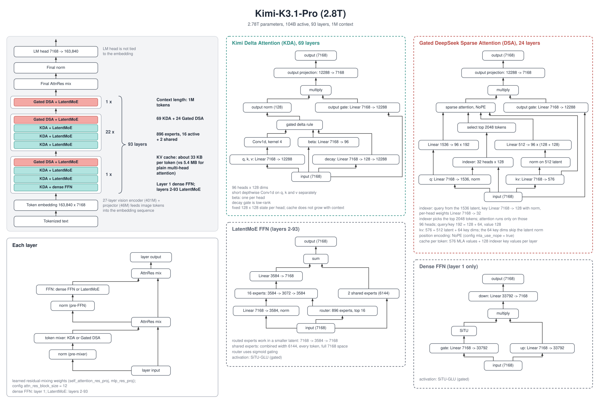

Kimi-K3.1-Pro
moonshotai/Kimi-K3.1-Pro · released 2 Nov 2026 · read at commit d9e99b0792
Key facts verifiedCompare with Kimi-K3
- parameters
- 2.78T
- active per token
- 104.37B
- layers
- 93
- context tokens
- 1,048,576
- cache per token
- 33 KiB
In short
69 KDA linear attention layers, 24 Gated DSA on MLA layers (top-k 2,048); 896 routed experts, 16 per token + 2 shared.
What changed since Kimi-K3
- Layer mix: 69 KDA linear + 24 MLA (full) → 69 KDA linear + 24 Gated DSA
- Tokens each sparse layer attends to: not stated → 2,048
- Cache per token: 27 KiB → 33 KiB
Layer by layer
Layer 1 is on the left.
- 69 KDA linear attention
- 24 Gated DSA on MLA
Diagram
Drawn by Gemini from verified fields, 24 of 24 checks passed · Open full size


Will it fit on my machine?
Weights plus the cache that grows with context, for one conversation. Runtime overhead is not included.
Context length
Weight precision
5179.81 GiB
weights 5178.36 GiB
cache 1.45 GiB
- 8 GB laptoptoo big
- 16 GB laptoptoo big
- 24 GB GPUtoo big
Weights = 2,780,110,363,392 parameters × bytes per parameter. Cache = 33,792 B per token × context + 429 MiB of fixed-size state, bf16. "Tight" means over 75% of the device's memory.
Facts and where they come from
Verified means two independent files agree.
| Fact | Value | Read from | Status |
|---|---|---|---|
| Total parametersweight file headers: sum of tensor shapes, MTP modules reported separately | 2,780,110,363,392 | weight file headers, model card | verified |
| Active parameters per tokenweight file headers: total - unselected routed experts - MTP - lookup tables - i | 104,368,141,056 | weight file headers | one source |
| Active parameters, excluding embeddingsweight file headers: active weights without input embedding and output head | 103,193,735,936 | weight file headers | one source |
| Layerstext_config.num_hidden_layers | 93 | config.json, model card, weight file headers | verified |
| Layer mixtext_config.linear_attn_config | 69 KDA linear, 24 Gated DSA | config.json, model card | verified |
| Context lengthtext_config.max_position_embeddings | 1,048,576 | config.json, model card | verified |
| Hidden size (width)text_config.hidden_size | 7,168 | config.json, model card, weight file headers | verified |
| Attention type and headstext_config.num_attention_heads | MLA · 96 heads (96 key-value) | config.json, model card | verified |
| Experts (routed / per token / shared)text_config.num_experts | 896 routed / 16 per token / 2 shared | config.json, model card, weight file headers | verified |
| Cache per tokenbf16; sliding-window and constant states excluded | 33,792 B | ArchWatch calculator | computed |
All 43 fields
| Fact | Value | Read from | Status |
|---|---|---|---|
| Activation (name on the card)model card: activation | SiTU-GLU | model card | one source |
| Activation functiontext_config.hidden_act | situ | config.json, model card | verified |
| Architecture name in the configmodel_type | kimi_k31 | config.json | one source |
| Dense FFN hidden sizetext_config.intermediate_size | 33,792 | config.json | one source |
| Designtext_config.num_experts | MoE | config.json | one source |
| Expert hidden sizetext_config.moe_intermediate_size | 3,072 | config.json, model card, weight file headers | verified |
| Expert latent widthtext_config.routed_expert_hidden_size | 3,584 | config.json, model card, weight file headers | verified |
| Expert routertext_config.moe_router_activation_func | sigmoid | config.json | one source |
| Gate on the attention outputtext_config.mla_use_output_gate | yes | config.json, weight file headers | verified |
| Gated FFNweight file headers: FFN gate/up/down tensor layout | yes | weight file headers | one source |
| Head sizecomputed from the facts above: text_config.qk_nope_head_dim + qk_rope_head_dim | 192 | computed from the facts above | one source |
| Input and output embeddings sharedtie_word_embeddings | no | config.json, weight file headers | verified |
| Layers with a dense FFNtext_config.first_k_dense_replace | 1 | config.json, model card, weight file headers | verified |
| Linear-attention convolution widthtext_config.linear_attn_config.short_conv_kernel_size | 4 | config.json | one source |
| Linear-attention head sizetext_config.linear_attn_config.head_dim | 128 | config.json | one source |
| Linear-attention headstext_config.linear_attn_config.num_heads | 96 | config.json | one source |
| MLA key-value compression widthtext_config.kv_lora_rank | 512 | config.json | one source |
| MLA position-encoded key sizetext_config.qk_rope_head_dim | 64 | config.json | one source |
| MLA query compression widthtext_config.q_lora_rank | 1,536 | config.json | one source |
| Multi-token-prediction layerstext_config.num_nextn_predict_layers | 0 | config.json | one source |
| Released weight formattext_config.quantization_config | mxfp4-pack-quantized (4-bit) | config.json | one source |
| Residual-mixing block sizetext_config.attn_res_block_size | 12 | config.json | one source |
| Shared-expert hidden sizeweight file headers: shared expert gate rows | 6,144 | weight file headers | one source |
| Sparse layers without position encodingtext_config.mla_use_nope | yes | config.json | one source |
| Sparse-attention indexer head sizetext_config.dsa_config.index_head_dim | 128 | config.json, model card | verified |
| Sparse-attention indexer headstext_config.dsa_config.index_num_heads | 32 | config.json, model card | verified |
| Sparse-attention indexer key widthtext_config.dsa_config.index_head_dim | 128 | config.json, weight file headers | verified |
| Tokens each sparse layer attends totext_config.dsa_config.index_topk | 2,048 | config.json, model card | verified |
| Value head sizetext_config.v_head_dim | 128 | config.json | one source |
| Values cached per token in MLA layerscomputed from the facts above: kv_lora_rank + qk_rope_head_dim | 576 | computed from the facts above, weight file headers | verified |
| Vision encoder layersvision_config | 27 | config.json | one source |
| Vision encoder parametersweight file headers: vision_tower tensors (projector excluded) | 401,214,464 | weight file headers, model card | verified |
| Vision encoder widthvision_config | 1,024 | config.json | one source |
| Vocabularytext_config.vocab_size | 163,840 | config.json, model card, weight file headers | verified |